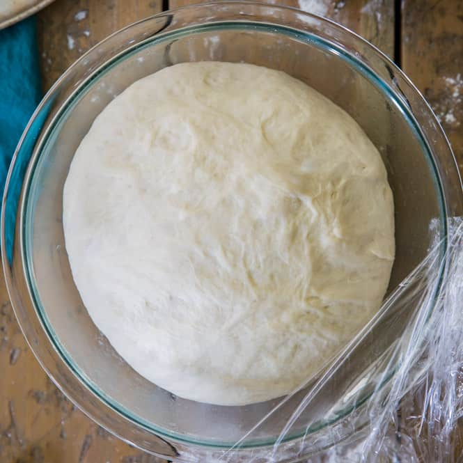

Pizza Dough

Description
A simple pizza dough that makes a chewy crust.
Igredients
- 2 1/4tsp Active Dry Yeast
- 1/2tsp Brown Sugar
- 1 1/2 Cups Warm Water
- 1tsp Salt
- 2tbs Olive Oil
- 3 1/3 Cups All-Purpose Flour
Steps
- Dissolve yeast and brown sugar in the water in a large bowl. Let sit for 10 minutes
- Stir in the salt and oil. Mix in 2 1/2 cups of the flour.
- Turn dough out onto a floured surface and knead in the rest of the flour until dough is no longer sticky.
- Let dough rise in a well oiled bowl for 1 hour.
- Punch down dough and form a tight ball. Allow dough to relax for 1 minute before rolling out and topping.
- Bake pizza on a stone at 425 degrees F for 15 to 20 minutes.
Home Page